该网站提供了大量的免费的 API 接口供我们使用,大家可以将其用在自己的项目上使用,并且每个接口都提供了完整的文档,开箱即用。
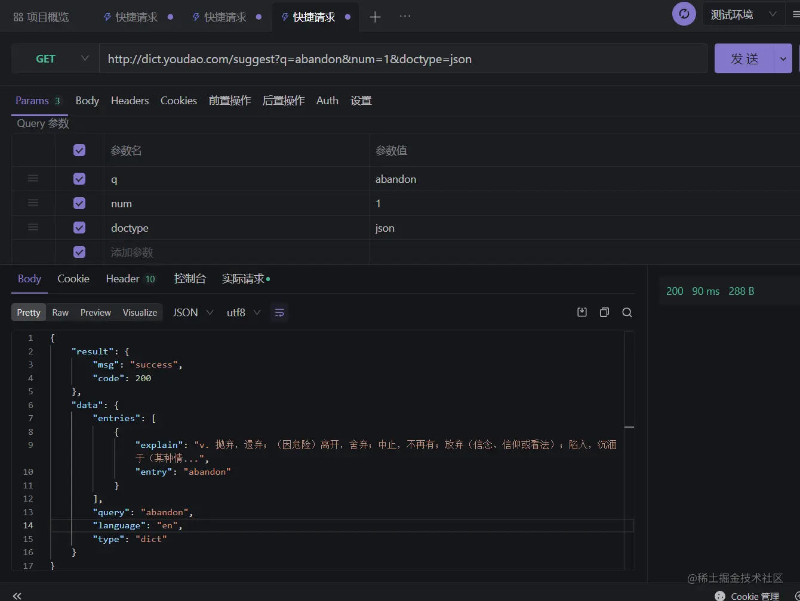
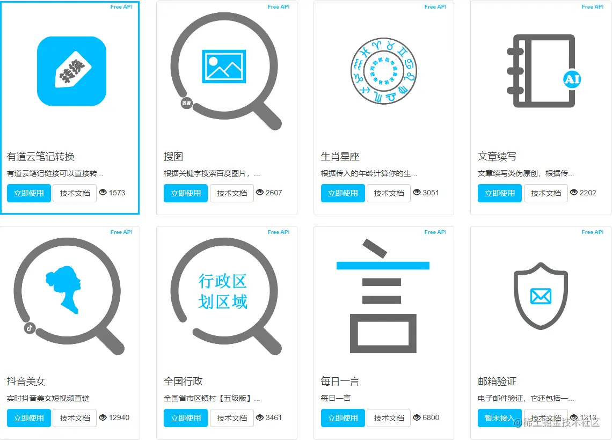
网易云音乐 NodeJs 版 API,具备登陆接口,多达200多个接口,文档也写得很好,非常给不会写后端且没有项目经验的同学。
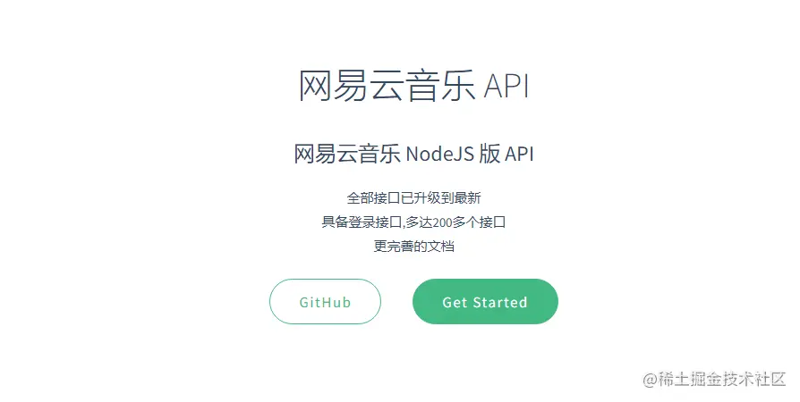
这个网站提供了大量的基础表情,适合用在写文章上。
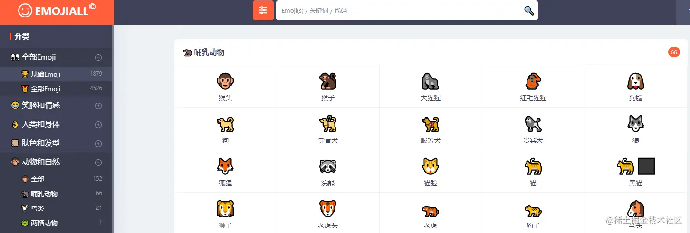
免费且开源的视频软件,可用于视频录制以及纸币串流的软件。
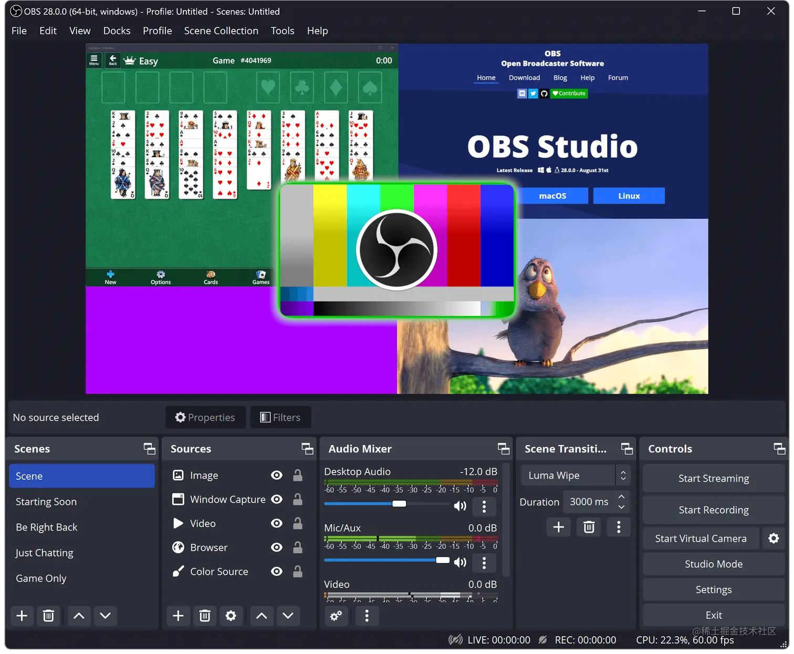
疯狂套娃吧!!!
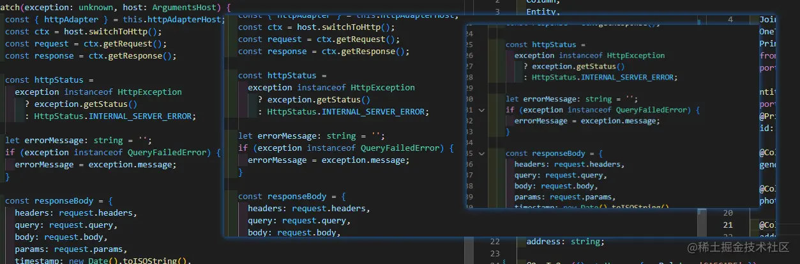
在掘金中不支持上传视频,这个软件很好的帮助了我上传动图。
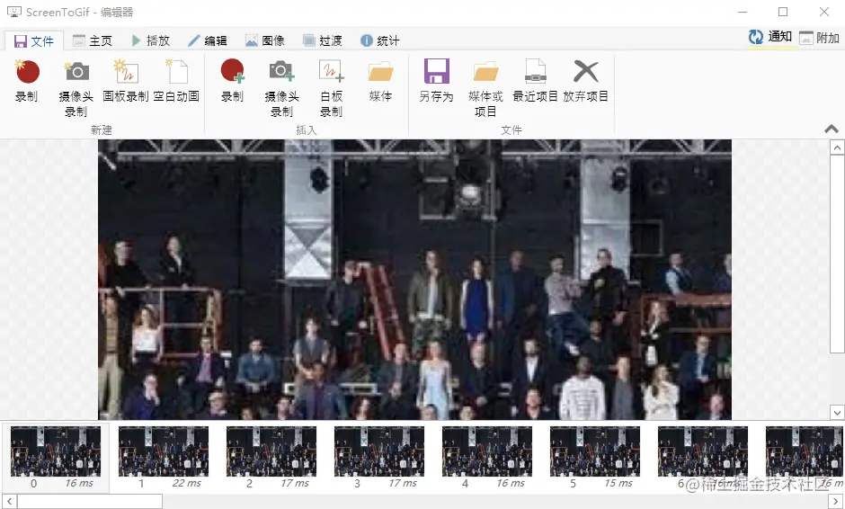
vscode 中的一个插件,方便我们写一些流程图。
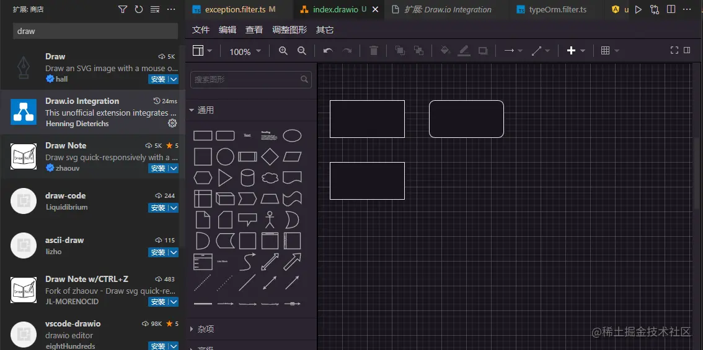
管理的项目,方便直接。
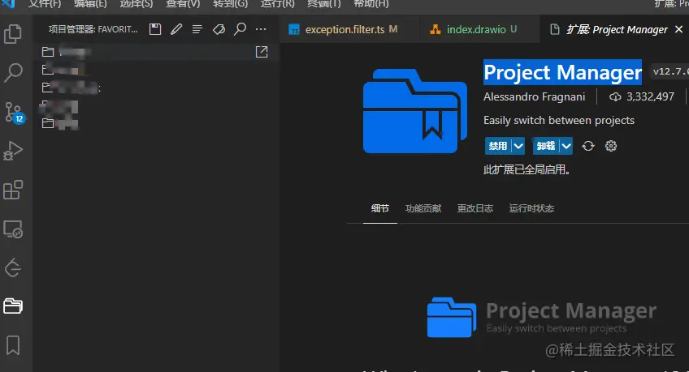
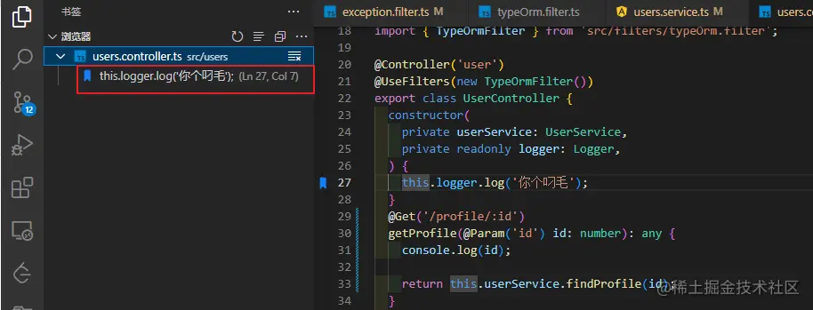
快速生成 console.log() 代码。
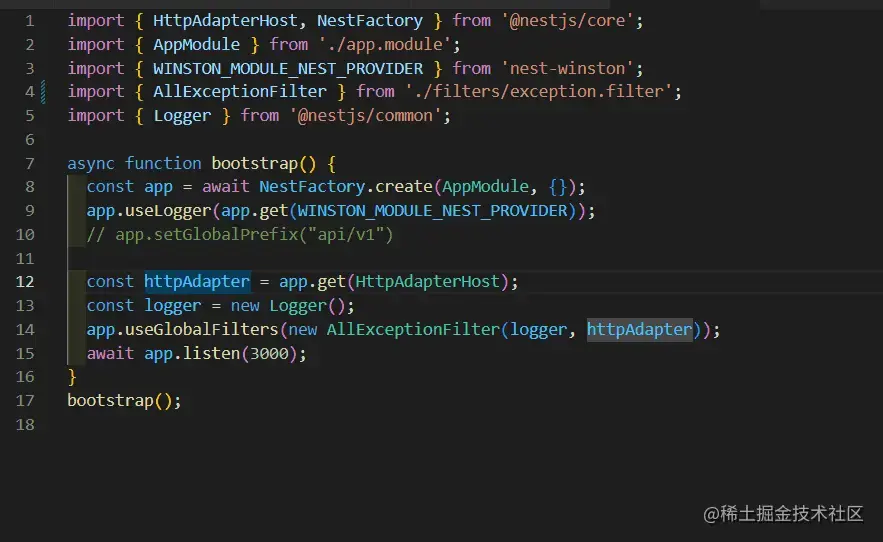
代码片段包裹,把选中的代码用 if、try...catch 等包裹起来。
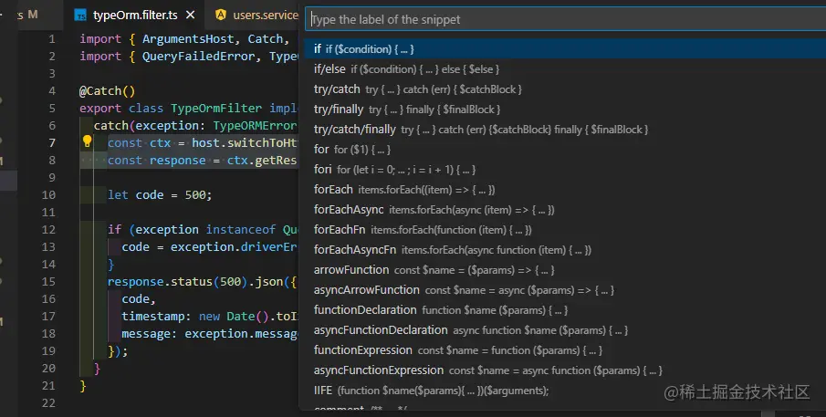
在摸鱼的时候临时打个 TODO 标记,等摸鱼完再打开这个项目,就可以在目录树结构中,方便直观地查看要处理的地方。
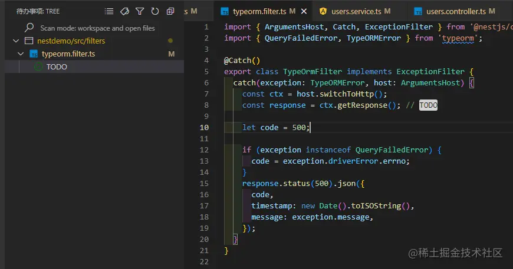
写文章的时候,需要展示项目组织结构,曾经我写的文章要用到目录结构,奈何那时候没发现......
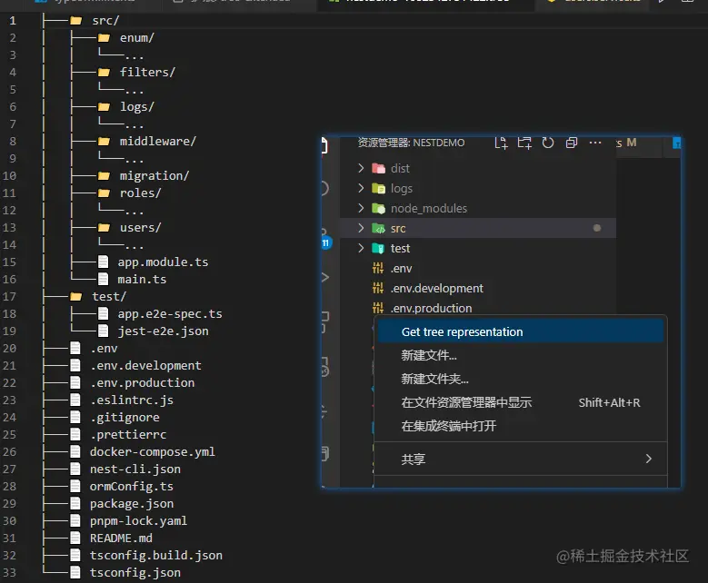